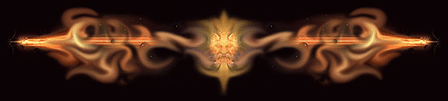

Pronouncing and Vibrating the Runes
Speaking from experience in working magick, there is no force more effective
than vibrating words and syllables of power in bringing forth manifestations
into the material world. "In the Beginning was the Word" - Thoth

BACK TO SATANIC WITCHCRAFT MAIN PAGE
BACK TO SATANIC POWER MEDITATION MAIN PAGE
© Copyright 2006, 2007, Joy of Satan Ministries;
There is no greater blasphemy to the Catholic/Christian
Church and its false "God" and company, than that of the Runes.
Used with affirmations and visualizations, this is
the most powerful form of magick.
Library
of Congress Number: 12-16457